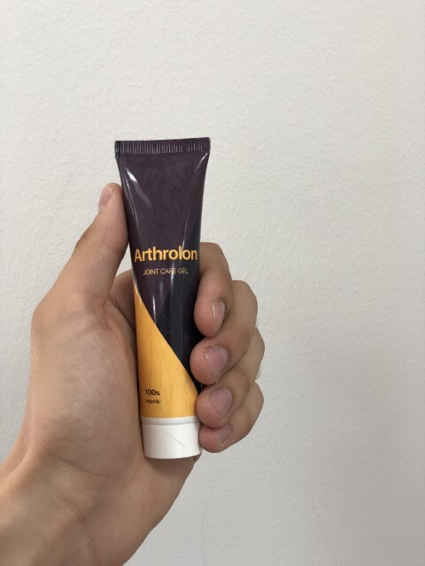

Din regiunea Dvs., apare cel mai mare număr de acuzații articulare și ale coloanei vertebrale!
Doar o zi - 01.02.2021 la plasarea comenzii, fiecare locuitor va primi ”Arthrolon” cu 53% reducere!
PRIMIŢI Arthrolon!— Bună ziua, Dl. Herman. Povestiți-ne ceva despre Dvs.
M-am născut și am crescut în Târgu Mureș. În anul 1975 am absolvit Universitatea de Medicină din Târgu Mureș. Acolo am cunoscut-o pe Raluca, viitoarea mea soție. Până în 2011 am muncit în calitate de medic primar ortoped și traumatolog.
— Suntem curioși să aflăm ce s-a întâmplat în 2011 și de ce ați renunțat la practica medicală?
În 2009, Raluca a fost diagnosticată cu gonartroză - osteoartrita articulației genunchiului. Trebuie să recunosc că a fost o cotitură importantă în viața noastră. Dar pe atunci părea a fi o încercare îngrozitoare. Timp de 2 ani am încercat totul: terapie fizică, am exclus efortul fizic, vitamine (condroitină, glucozamină, MSM ș.a.), geluri, unguente. Zadarnic. Nimic nu a funcționat, eram pustiiți. Incredibil, având studii în medicină nu-mi puteam ajuta soția. Eram complet dezamăgit de medicina noastră: Nu există niciun remediu pentru a-ți ajuta persoana iubită să aibă o viață lungă și fericită? Atunci am început cercetările.
— Ce fel de cercetări? Puteți să ne dați detalii?
Când îți dai seama că soția ta ar putea să ajungă peste câțiva ani într-un scaun cu roţi, faci orice. Am început cercetările. Am studiat toate materialele ce aveau legătură directă sau indirectă cu afecțiunile articulare. Fiziologie, psihosomatică, biochimie, am recitit o mulțime de informație. Am cheltuit aproape toți banii pentru a învăța din experiența celor mai buni specialiști asiatici care înțelegeau cel mai bine problema afecțiunilor articulare.
În decembrie 2011 am reușit să adun toate cunoștințele acumulate până la acel moment și mi-am dat seama că amestecând câteva substanțe, voi obține un remediu care scapă de durerea articulară. Aici am avut o surpriză neplăcută: substanțele de care aveam nevoie nu se găseau în țara noastră. Am împrumutat bani și am făcut o comandă din Asia care a fost livrată peste o lună. Dar și aici mă aștepta o mare dezamăgire - nimeni nu voia să producă remediul meu. Ajutorul a venit din partea foștilor colegi de facultate. După 3 săptămâni am primit formula și Raluca putea să testeze remediul.
Dumnezeule! Eram în al nouălea cer de bucurie!
— Ce-a urmat?
Raluca se îndrepta, văzând cu ochii. După 7 zile de folosire a început să meargă la magazin după produse, începuse să zâmbească, demult nu o văzusem fericită. Peste 4 săptămâni s-a recuperat de artroză! Nu-mi venea să cred, dar diagnosticul a arătat că Raluca este sănătoasă. Eram fericit. A fost o adevărată victorie! -
— Sunteți un exemplu pentru mulți oameni! Ați continuat cercetările?
Mai târziu. La început ne bucuram pur și simplu de fiecare clipă. Raluca mi-a dăruit o fiică minunată și îmi mulțumea pentru remediul meu, deoarece sarcina ar fi afectat articulațiile.
Într-o seară Raluca m-a întrebat câți oameni suferă de afecțiunile articulare în țara noastră? Datele au arătat că aproape 1 milion de români suferă de diferite boli articulare. Mi-a adresat întrebarea care mi-a schimbat pentru totdeauna viața: ”Ai putea să-i ajuți pe ceilalți așa cum mai ajutat pe mine și să-i faci fericiți?” Mă îndrăgosteam din nou de ea. Această femeie era tot ce aveam mai bun în viața mea. Am acceptat. A durat aproximativ 3 ani pentru a ”cizela” formula și a crea remediul ”Arthrolon” - cel mai eficient remediu pe care și-l pot permite românii.
— Sună încurajator. Povestiți-ne în detaliu despre Arthrolon.
Împreună cu Raluca am reușit să facem ceea ce n-a reușit nimeni de până atunci. Arthrolon este un gel revoluționar pe bază de:
- Zingiber officinale rhizome extract
- Capsicum annuum fruit extract
- Cinnamomum camphora leaf extract
- Gaulteria fregrantissima leaf extract
Din păcate, majoritatea ingredientelor nu sunt vândute în țara noastră, deci le aducem din Asia.
Datorită formulei unice, Arthrolon uşurează simptomele afecțiunilor articulare:
- Artrită
- Artroză
- Coxartroză
- Osteoporoză
- Osteocondroză
- Osteocondrită
- Osteoporoză
- Leziuni la nivelul meniscului
- Gonartroză
— Incredibil! Sunteți un adevărat inventator. Cum ați reușit să ajungeți până aici?
Nu uitați că aceasta a fost posibil datorită multor ani de muncă grea. Anul viitor vom aniversa 10 ani. În acest răstimp, 17.934 oameni au revenit la o viață normală, uitând pentru totdeauna de durerea articulațiilor.
Știţi, nu ne-am pus ca scop să câștigăm bani din asta. Suntem pentru o națiune sănătoasă! Apropo, în fiecare lună avem oferte și promoții pentru consumatorii produselor noastre.
— De unde putem să cumpărăm Arthrolon?
Cu părere de rău, nu poate fi găsit în farmacii. Acestea continuă să comercializeze remedii ineficiente,
care nu aduc niciun beneficiu, sau mai rău - în loc să vindece, au o mulțime de efecte secundare.
Avem un site oficial unde puteți comanda produsul original Arthrolon
— Ce sfaturi puteţi da cititorilor noștri?
Recent, am decis cu Raluca să reducem cu 53% prețul pentru Arthrolon. Acum toată lumea poate profita de această ofertă până la 01.02.2021 inclusiv! Fiți sănătoși! Sănătatea e cea mai de preț! Banii nu aduc fericire.
— Succes, prieteni!
Încearca-ţi norocul!
Învârtiţi roata! Și obțineți până la 53% reducere
pentru remediul Arthrolon
Puteți comanda Arthrolon cu o reducere de 53%.
Din regiunea Dvs., apare cel mai mare număr de acuzații articulare și ale coloanei vertebrale!
Doar o zi - 01.02.2021 la plasarea comenzii, fiecare locuitor va primi ”Arthrolon” cu 53% reducere!
PRIMIŢI Arthrolon!
Carolina Ilașcu
Dl. Păunescu, vă mulțumesc pentru acest produs minunat. Eram demult în căutarea unui remediu eficient. Am plasat comanda și o aștept cu nerăbdare! Mulțumesc!
o oră în urmă
Delia Lascăr
Sufeream de artroză. Acum sunt sănătoasă... după un curs m-am recuperat! Vă mulțumesc!
o oră în urmă
Ninela Urziceanu
Confirm! Arthrolon elimină eficient simptomele afecțiunilor articulare! Nu mă mai dor coatele, nici genunchii.
o oră în urmă
Marius Pintilie
Dl. Păunescu, vă mulțumim pentru această invenție!!! V-ați salvat soția și o mulțime de lume din ghearele bolii. Am început să aplic Arthrolon în regiunea cervicală, sufeream de osteocondroză și aczm mă simt într-adevăr mai bine. Sper că mă voi recupera!

o oră în urmă
Herman Păunescu
Marius, nu vă faceţi griji și continuaţi să aplicaţi Arthrolon. Urmaţi instrucțiunea de utilizare.
Cu respect, Herman.
o oră în urmă
Andrii Cernea
Fraților, ajutor! Am o durere insuportabilă de spate. Disconfortul și durerea nu mă lasă să trăiesc. Nu știu ce să mai încerc. Am luat diferite pastile, unguente, dar nu mă ajută nimic.(
o oră în urmă
Raul Cămătaru
Andrii, te sfătuiesc să comanzi Arthrolon. Aveam și eu probleme cu articulațiile, aveam momente când nici să merg nu mai puteam. Mama a aflat despre acest mijloc și m-a sfătuit să-l aplic. L-am cumpărat 6 luni în urmă, nu era cu reducere (oricum prețul e bun). Nu mai am probleme cu articulațiile, mă mişc fără durere. Crede-mă, te va ajuta.
o oră n urmă
Sabina Tomac
Cum pot să comand Arthrolon?
o oră în urmă
Jan Cernat
Sabina, aici este link-ul site-ul oficial, dacă vrei să beneficiezi de ofertă la o reducere, te sfătuiesc să te grăbești. Personal, gelul m-a ajutat să mă recuper
o oră în urmă
Sabina Tomac
Jan, mersi! Am comandat deja. În cât timp fac livrarea?
o oră în urmă
Jan Cernat
Sabina, vei primi gelul în câteva zile
o oră în urmă
Delia Buzoianu
L-am comandat 2 luni în urmă pentru sora mea. Suferea demult de artrită. Trebuia să vedeți cum îmi mulțumea pentru că m-am încumetat să comand Arthrolon.
o oră în urmă
Mircea Danciu
Delia, este într-adevăr atât de eficient? Cred că voi comanda și eu la acest preț...
o oră în urmă
Vasile Găbreanu
Auzisem de acest produs de la niște prieteni care l-au comandat. 2 ani în urmă mi-am traumat piciorul și simt senzații periodice de durere. Medicii nu mă pot ajuta cu nimic... după acest interviu am decis să comand și eu Arthrolon. Îl voi testa personal.
o oră în urmă
Ciprian Lauran
Sunt uimit să văd câtă lume are probleme cu articulațiile, noroc că am aflat despre Arthrolon deacum o lună, m-a salvat de osteocondroză. Niciun produs administrat anterior n-a avut același efect.
o oră în urmă
Sebastian Hadaciu
Fraților, este eficient? Nu m-au putut vindeca nici doctorii, nici medicamentele din farmacii
o oră în urmă
Cecilia Balan
Bineînțeles, Sebastian. Este extrem de eficient și nu dăunează sănătății. Grăbește-te să plasezi comanda! Arthrolon m-a izbăvit de durerea de spate.
o oră în urmă
Mădălina T.
Vă mulțumesc, Arthrolon m-a ajutat să mă recuper! L-am comandat pe site-ul oficial! Nu amânați rezolvarea problemei. Treceţi cursul acum, ca să vă puteți mișca mâine.
o oră în urmă
Diana Cinpoiașu
Dl. Herman, vă mulțumesc. M-ați făcut să am încredere în eficacitatea Arthrolon! Soțul meu a suferit 5 ani de aceeași afecțiune ca și soția Dvs. Se chinuia îngrozitor. Acum aleargă, pot zice că are 18 ani.
Livrarea a fost foarte rapidă.
o oră în urmă
Herman Păunescu
Diana, spuneţi-mi cât a durat recuperarea?
Cu resprect, Herman
o oră în urmă
Diana Cinpoiașu
A aplicat gelul o lună. Acum se mişcă fără ajutor, nu are dureri. Sunt fericită că s-a recuperat.
o oră în urmă
Herman Păunescu
Diana, Vă mulțumesc pentru răspuns.
Cu respect, Herman
o oră în urmă
Elena Răboja
Rezultatul mi-a întrecut așteptările. Am scăpat de gută pentru totdeauna! Am comandat câteva cutii pentru prietenele mele. Pe una o doare spatele, pe alta - articulația cotului.
57 minute în urmă
Sorina M.
Am plasat comanda chiar astăzi...
Uimitor, prețul este real!
Am indicat numărul de telefon pe site, m-au sunat în curând ca să confirm comanda. Îmi doresc o viață normală, să pot face plimbări pe jos.
55 minute în urmă
Camelia Rideanu
L-am comandat pentru mine. Artrita mă chinuie de câțiva ani. De fiecare dată când plouă sau se schimbă vremea, e imposibil, cad din picioare. Arthrolon m-a ajutat în câteva săptămâni. Înainte nu credeam că poate fi adevărat.
53 minute în urmă
Melissa O.
Prietenul nostru vinde Arthrolon în farmacia sa la un preț de 200 lei. Nu l-am luat, n-am atâția bani în plus. Am văzut oferta de reducere și am comandat pe loc. Atât îmi pot permite din pensia mea. Genunchii nu mă mai dor! Muncesc cu drag în grădină. Vă mulțumesc!
48 minute în urmă
Herman Păunescu
Deci, farmaciile încearcă să-l comercializeze. Nerușinații fac bani din nevoia altor oameni. Vom verifica unde și cui trimitem produsul.
Cu respect, Herman
36 minute în urmă
Gloria Abadi
1 curs cu Arthrolon m-a ajutat să scăp de podagră. Îl am mereu în trusa medicală pentru orice eventualitate.
36 minute în urmă
Lucian Ifreme
L-am comandat și m-a ajutat. Îl recomand pacienților care suferă de boli articulare, te însănătoșești pe loc. Livrare rapidă, eu l-am primit în câteva zile.
39 minute în urmă
Herman Păunescu
Mulțumesc, Lucian! Ne străduim să facem cunoscut produsul Arthrolon cât mai multor oameni ca să le ajutăm.
Cu respect, Herman
36 minute în urmă
Alexa Vintilă
Am citit articolul și am decis pe loc să plasez comanda ca să pot beneficia de ofetă. Istoria lui Herman și Raluca m-a impresionat până la lacrimi. Remediile obișnuite au efect temporar. Doctorii spun că artrita se lasă vindecată cu greu. Livrarea a fost rapidă. Am simțit din prima zi o senzație de ușurare, n-am putut să nu scriu. Vă mulțumesc! Acum voi avea o viață normală!
31 minute în urmă
Paula Rucan
De unde îl comandați? În farmacii lipsește și nu-mi place să fac cumpărături online. N-aș vrea să primesc un produs contrafăcut, din câte înțeleg nu va avea efect.
27 minute în urmă
Herman Păunescu
Repet, Arthrolon poate fi comandat DOAR pe site-ul oficial, ca să nu greşiţi - accesaţi link-ul de sus! Reamintesc, puteți cumpăra Arthrolon cu 53% reducere, oferta este limitată, grăbiţi-vă să plasaţi comanda!
Feriți-vă de produsele contrafăcute.
Cu respect, Herman
15 minute în urmă